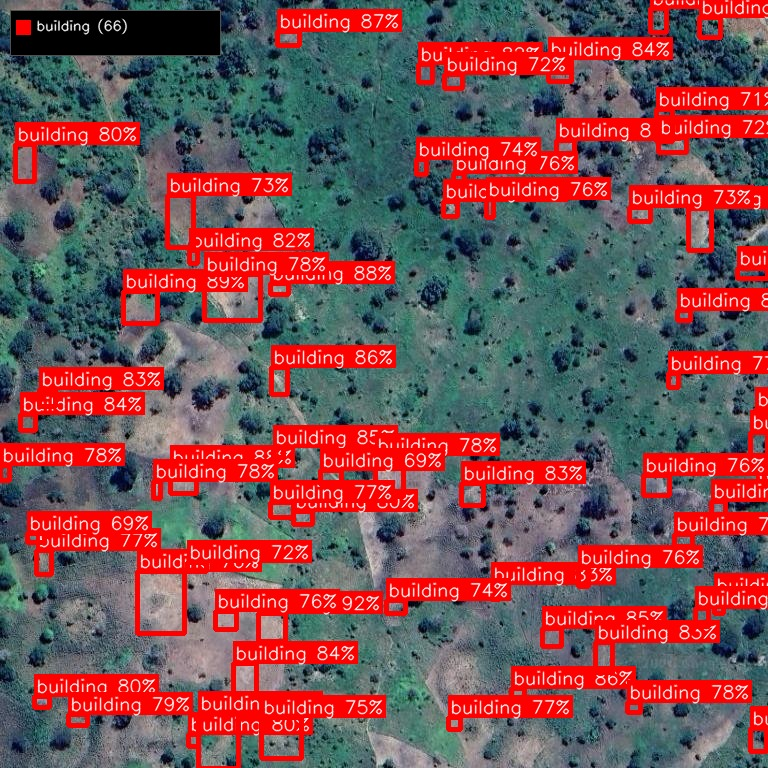
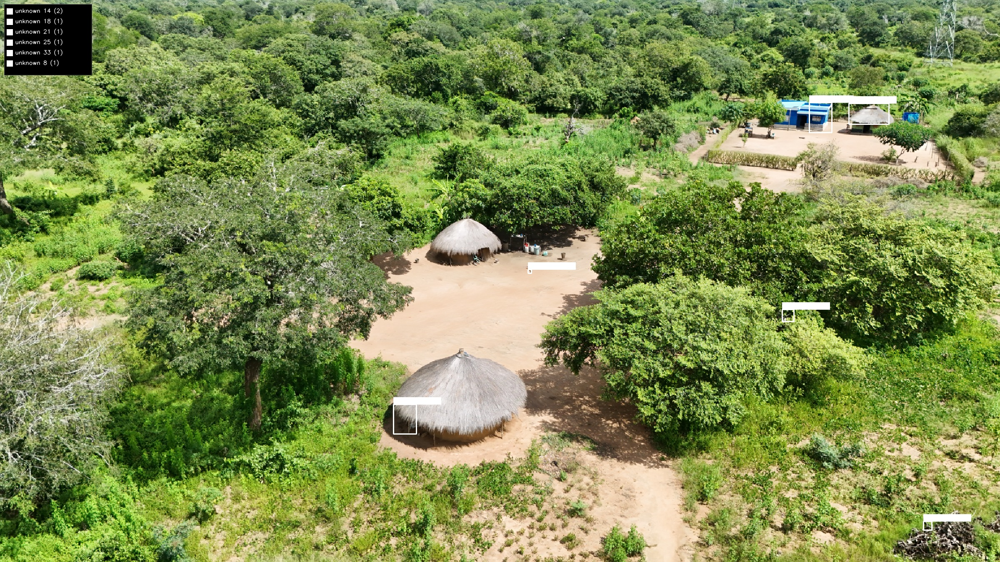
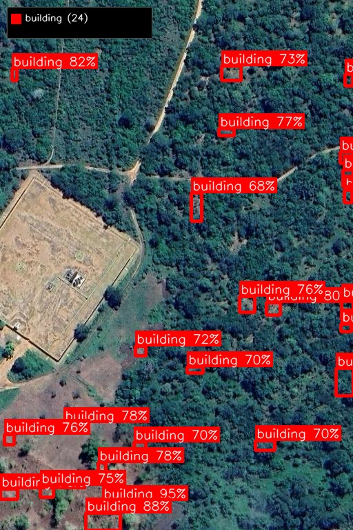
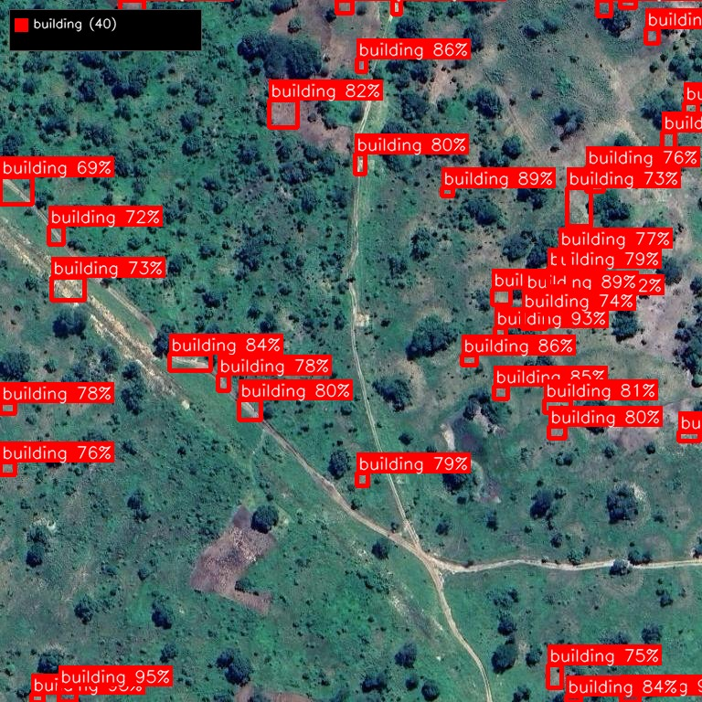

AI-powered land use monitoring and encroachment detection using live satellite imagery and drone surveys. Protect your pipeline corridors, mining concessions, powerline routes, and telecom infrastructure across Africa.
Real results from AfriScan — AI detection on satellite and drone imagery across Mozambique.

66 buildings automatically detected from satellite imagery along a pipeline corridor. Each structure identified with location and confidence score — no field team required.

High-resolution drone imagery confirms thatched-roof compounds detected by satellite. AI identifies traditional African structures that generic models miss.

24 structures detected near an industrial site within a corridor buffer zone. Ongoing monitoring tracks new construction and expansion over time.

40 buildings identified along a planned route through dense bush. AI scans the entire corridor in minutes, flagging every structure for assessment.
Across Africa, communities encroach on pipeline corridors, mining concessions, powerline routes, and telecom sites. By the time you find out, it's a legal dispute, a safety risk, or a multi-million dollar relocation.
New buildings, settlements, and farming creep into your corridor or concession. Without continuous monitoring, encroachment goes undetected until it's too late to act.
Undetected land use changes lead to compensation claims, legal battles, and project delays. Early detection saves millions in relocation and litigation costs.
People living or farming near pipelines, powerlines, and mine sites face real danger. Regulators hold you accountable for what happens in your corridor.
Continuous land use monitoring powered by live satellite imagery, drone surveys, and AI — so you see encroachment as it happens, not months later.
Access live Airbus Pléiades and SPOT satellite imagery covering your entire corridor or concession. AI scans every new image for changes — new structures, cleared land, expanded farming, or settlement growth.
Purpose-built AI models trained on African rural structures — mud huts, zinc-roof compounds, informal settlements, crop fields. Automatically flags new encroachment and land use changes within your defined zones.
Compare imagery over time to spot exactly what changed and when. Get automated alerts when new buildings appear, farming expands, or activity increases in your corridor buffer zone.
When satellite flags an issue, deploy Afridrone teams for high-resolution drone verification. Centimetre-accuracy imagery confirms exactly what's on the ground.
Define your pipeline routes, buffer zones, mine boundaries, or powerline corridors. Live web dashboard shows encroachment status, change history, and risk areas — accessible from any browser.
Export all detections as GeoPackage, GeoJSON, Shapefile, or KML. Generate PDF reports with maps, timelines, and encroachment statistics — ready for regulators, stakeholders, and legal teams.
Land encroachment threatens every major infrastructure sector in Africa. AfriScan provides continuous monitoring tailored to each.
Monitor pipeline corridors and right-of-way for new settlements, farming encroachment, and unauthorised activity. Protect operational and planned routes with live change detection.
Track community encroachment on concession boundaries, monitor artisanal mining activity, and detect settlement expansion near tailings dams and haul roads.
Detect structures and farming under transmission lines, monitor vegetation encroachment on powerline corridors, and flag buildings in exclusion zones.
Monitor cell tower sites and fibre routes for land use changes. Track settlement growth around infrastructure for coverage planning and site security.
Tell us your pipeline route, concession boundary, powerline corridor, or site perimeter. We set up your monitoring zones and buffer distances.
We handle everything — live Airbus satellite imagery for continuous wide-area monitoring, plus Afridrone teams for high-resolution drone surveys when and where you need them.
Our Africa-trained AI continuously analyses incoming imagery, comparing against baselines to detect new structures, land clearing, crop expansion, and settlement growth in your zones.
Receive encroachment alerts, change reports, and GIS data through your live dashboard. Act on issues early — before they become disputes, safety risks, or compliance failures.
You don't need your own drones, satellites, or GIS team. We acquire all the imagery and deliver the intelligence — end to end.
Continuous access to Airbus Defence & Space satellite imagery — Pléiades Neo at 30cm resolution and SPOT at 1.5m. We task satellites to cover your corridors and concessions on a schedule that suits your monitoring needs.
Professional drone survey teams deployed through our partnership with Afridrone. Centimetre-resolution imagery for detailed site verification and close-range inspection.
Satellite for continuous watching. Drones for ground truth. AI for instant analysis. One provider — complete coverage.
Generic detection models trained on European and North American imagery fail on African landscapes. AfriScan is trained on real African structures — thatched roofs, mud-brick compounds, informal markets, zinc shelters — delivering accuracy where it matters most.
Pipeline corridor surveys across Cabo Delgado, Inhambane, and Gaza provinces.
Models adaptable to rural settlement patterns across East, West, and Southern Africa.
Designed for bush, savanna, coastal, and semi-arid environments common across the continent.
We handle everything — satellite tasking, drone deployment, AI processing, and reporting. You receive alerts and reports. Zero infrastructure on your side.
Your team gets a branded web dashboard showing live monitoring status, encroachment history, and all detections. Accessible from any browser, anywhere.
When something is flagged, we deploy Afridrone teams for ground-truth drone verification. High-resolution evidence for your legal, compliance, or community teams.
Get in touch to discuss your monitoring requirements. We'll show you how AfriScan can protect your infrastructure with live satellite and drone intelligence.